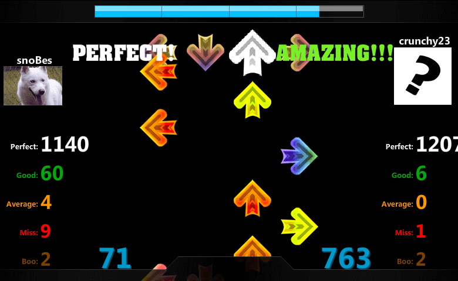
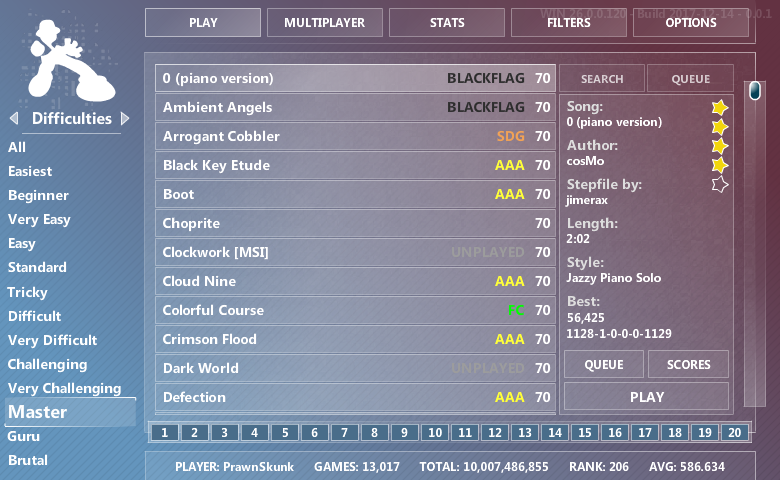

Flash Flash Revolution is an online rhythm game created in 2002 by James Webb. The name is a tribute to Dance Dance Revolution, but is meant to be played using your keyboard.
In 2014, I took over leadership of the site, and responsibility for engine development (ActionScript 3, OpenFL, Haxe) and server-side programming (PHP, MySQL). I aim to represent the interests of the community, and collaborate with my team to implement solutions which improve overall player experience. My vision is to make FFR as accessible as possible to everyone.
Today, the site has 2 million registered users, and still maintains over 1,000 daily active players and 15,000 monthly active players.

R^3 Air Edition
Up until 2017, FFR could only be played through Adobe Flash Player and an Internet browser. With poor performance on modern systems, and the end of Flash in 2020, we needed a solution.
I helped target a build for Adobe AIR, with additional features including a desktop application, hardware acceleration, vsync, auto offset calibration, and a patcher.
R^3 Air Edition was the same great game engine, built entirely without Flash. By compiling from the same AS3 codebase, all updates would be backwards compatible with the browser version.
